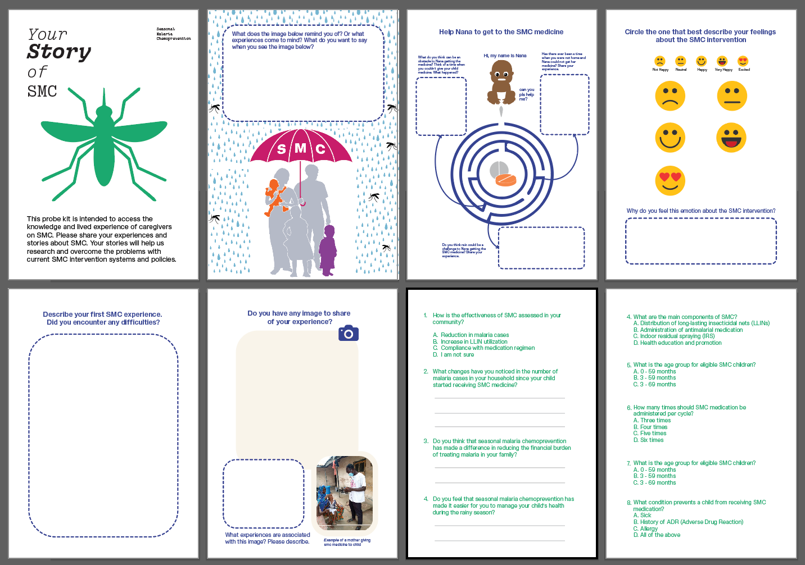
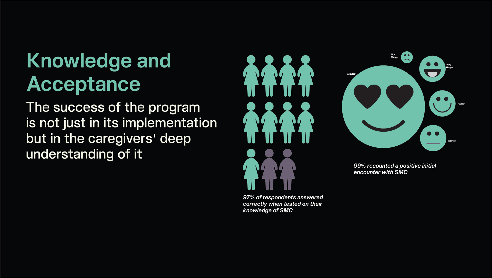
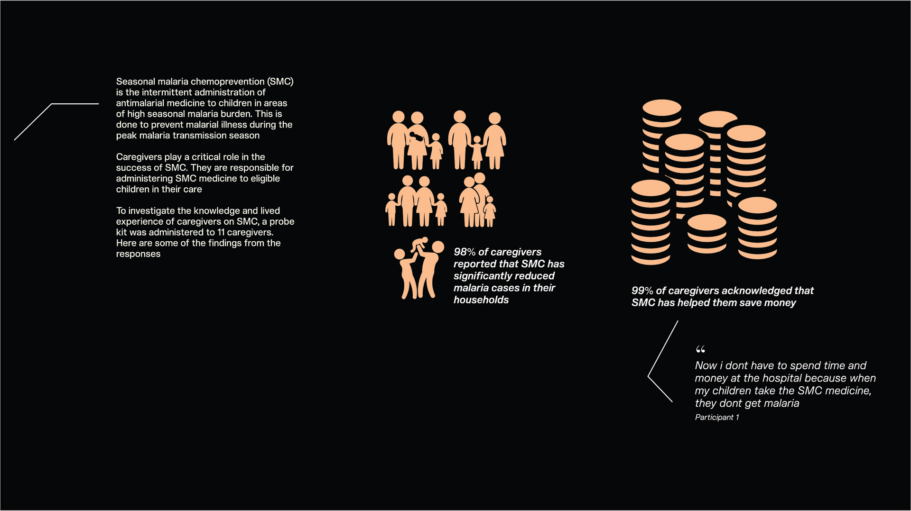
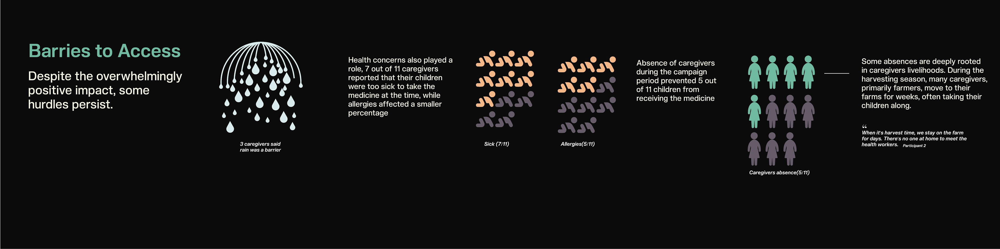
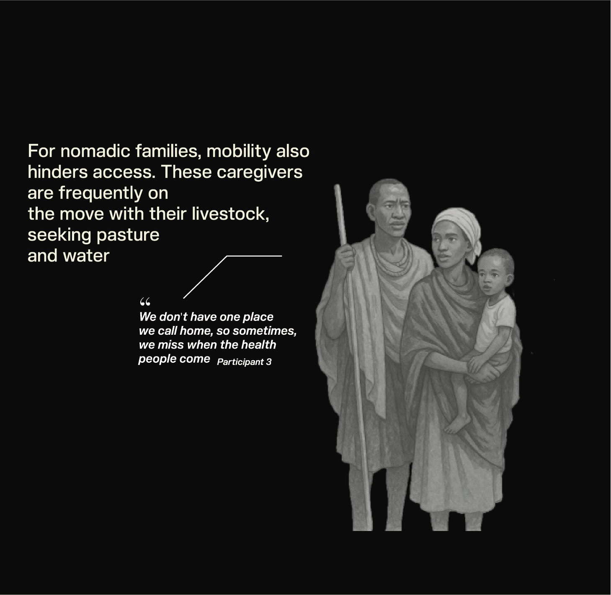
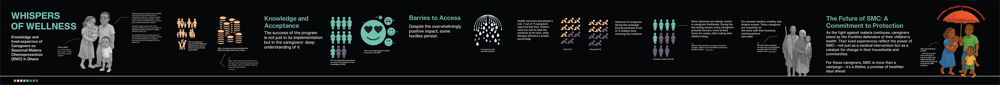
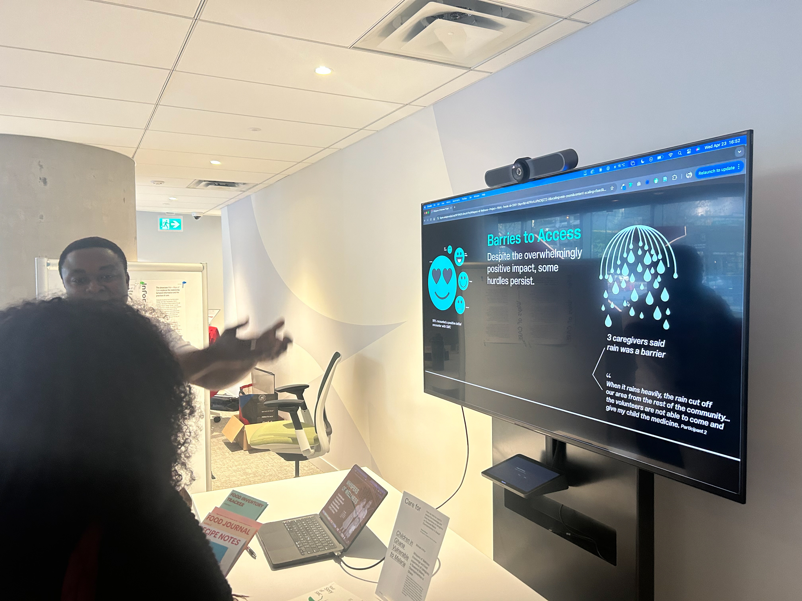
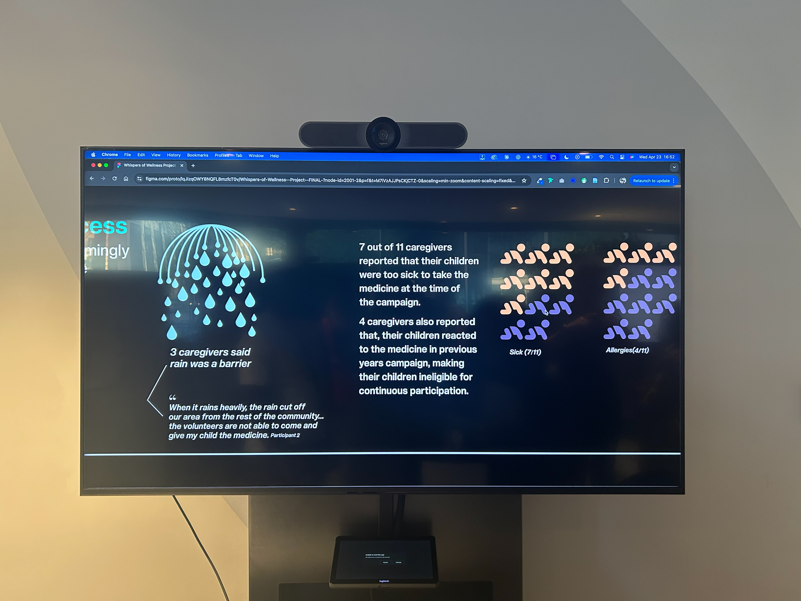
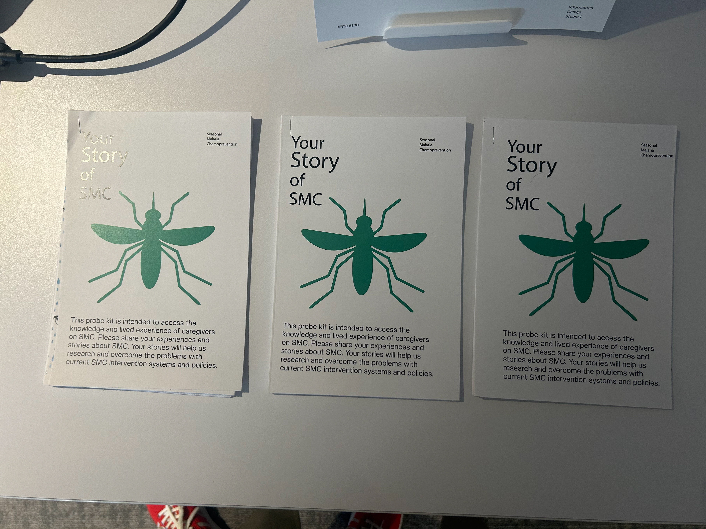

Data Storytelling
Data Storytelling
Malaria remains a major health threat for children under five in Ghana.
Seasonal Malaria Chemoprevention (SMC) provides preventive medicine during peak transmission seasons.
However, public health reporting often focuses on coverage numbers rather than lived experiences.
This project asks:
How can information design communicate both the impact of SMC and the everyday realities caregivers face?
To understand caregivers' experiences, I designed a cultural probe kit to collect both emotional and practical insights.
The probe kit included:
These allowed caregivers to share not just what they know, but how SMC fits into their lives.

Participants included 11 caregivers from communities participating in the SMC program.
Many caregivers were:
Their responses provided a rich combination of lived experiences and statistical insights.
Caregivers view SMC as an important protection for their children.
SMC not only protects children but also reduces household healthcare costs.
Some children still miss medication due to:
These barriers are tied to livelihood patterns rather than awareness.




Pastoralist families travel with livestock.
"We don't have one place we call home. Sometimes we miss when the health people come."
This project produced:
Together, they communicate both the measurable impact and the human realities behind the program.



